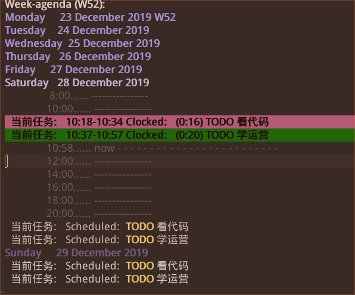

时间去哪儿了

文章目录
每个人都有一个时间的属性，死掉了就没有了。 在那个时间里，你可以做一些事情。有的事情要多一点时间，有的事情要少一点。
有些人比较繁忙，比如文员，或者学生，会有一张清单，用来记录做某个事情，要在某个时间做，然后花多少时间。
我呢，是一个懒散的人，有时写写博客，大部分时间会看看游戏直播，网页新闻什么的不正经的事，浪费了许多时间。
今天突然想到我应该把正经的事情记录一些，在上面花了多少时间，不花时间时间都跑掉了，到年底了一场空。
因为经常会用电脑，平时用文字编辑软件比较多，而常用的 emacs 编辑软件就带有时间管理功能，就用它来记录我每天 花了多长时间做正经事上面了，当然，功能很丰富，用来做任务清单也可以的。

有专家说，人做一件事做10000小时就成专家了，我做个伪专家就好了，学陶渊明，学习个100小时。 假如一天2 小时，一月就60小时，那么一个多月就成 "砖家"了，哈哈。